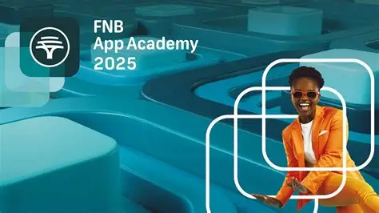

Childhood
First Coach & Inspiration
High School Transition
Final High School Years
First Job at FNB
Servest Experience
College & Programming Journey

FNB App Academy
Future Goals
Contact / Call to Action
img/FNB-scaled.jpg
Thank you FNB for making me believe in my Dreams
❮
❯
⏸️